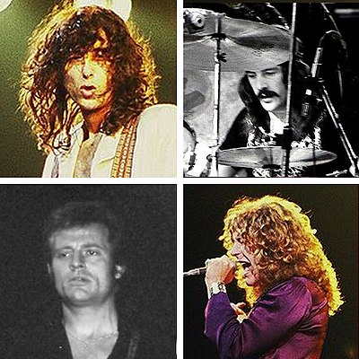

Robert Plant
(born 20 August 1948) is an English singer, songwriter, and musician, best known as the lead singer and lyricist of the rock band Led Zeppelin. Plant is regarded as one of the greatest musicians in the history of rock music.
A powerful and wide vocal range (particularly evident in his high-pitched vocals) has given him a successful singing career spanning over 50 years. In 2008, Rolling Stone editors ranked him number 15 on their list of the 100 best singers of all time. In 2011, Rolling Stone readers ranked Plant the greatest of all lead singers.[1] In 2006, magazine Hit Parader named Plant the "Greatest Metal Vocalist of All Time". In 2009, Plant was voted "the greatest voice in rock" in a poll conducted by Planet Rock.
James Patrick Page (born 9 January 1944) is an English musician, songwriter, and record producer who achieved international success as the guitarist and founder of the rock band Led Zeppelin.
Page began his career as a studio session musician in London and, by the mid-1960s, alongside Big Jim Sullivan, was one of the most sought-after session guitarists in Britain. He was a member of the Yardbirds from 1966 to 1968. In late 1968, he founded Led Zeppelin.
Page is widely considered to be one of the greatest and most influential guitarists of all time. Rolling Stone magazine has described Page as "the pontiff of power riffing" and ranked him number three in their list of the "100 Greatest Guitarists of All Time", behind Jimi Hendrix and Eric Clapton respectively. In 2010, he was ranked number two in Gibson's list of "Top 50 Guitarists of All Time" and, in 2007, number four on Classic Rock's "100 Wildest Guitar Heroes". He was inducted into the Rock and Roll Hall of Fame twice; once as a member of the Yardbirds (1992) and once as a member of Led Zeppelin (1995).
John Richard Baldwin (born 3 January 1946), better known by his stage name John Paul Jones, is an English musician and record producer who was the bassist in the rock band Led Zeppelin. Prior to forming the band with Jimmy Page in 1968, he was a session musician and arranger. After the death of drummer John Bonham in 1980, Zeppelin disbanded and Jones developed a solo career. He has collaborated with musicians across a variety of genres, including Josh Homme and Dave Grohl with the supergroup Them Crooked Vultures.
John Henry Bonham (31 May 1948 – 25 September 1980) was an English musician and songwriter, best known as the drummer for the British rock band Led Zeppelin. Esteemed for his speed, power, fast bass drumming, distinctive sound, and "feel" for the groove, he is regarded by many as the greatest and most influential rock drummer in history. Rolling Stone magazine ranked him number 1 in their list of the "100 Greatest Drummers of All Time".